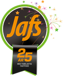
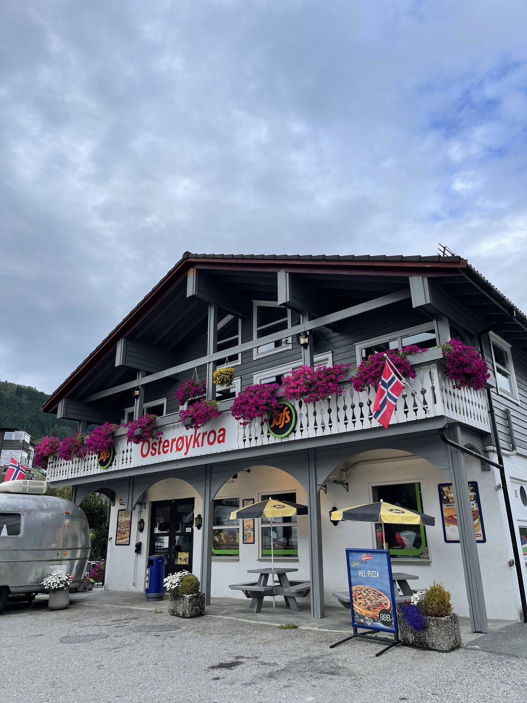
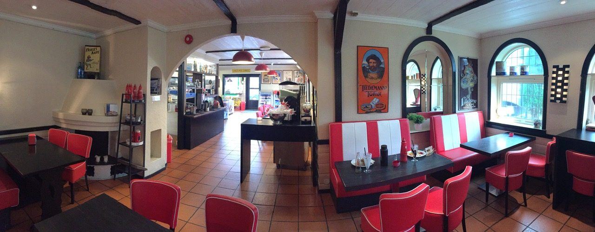
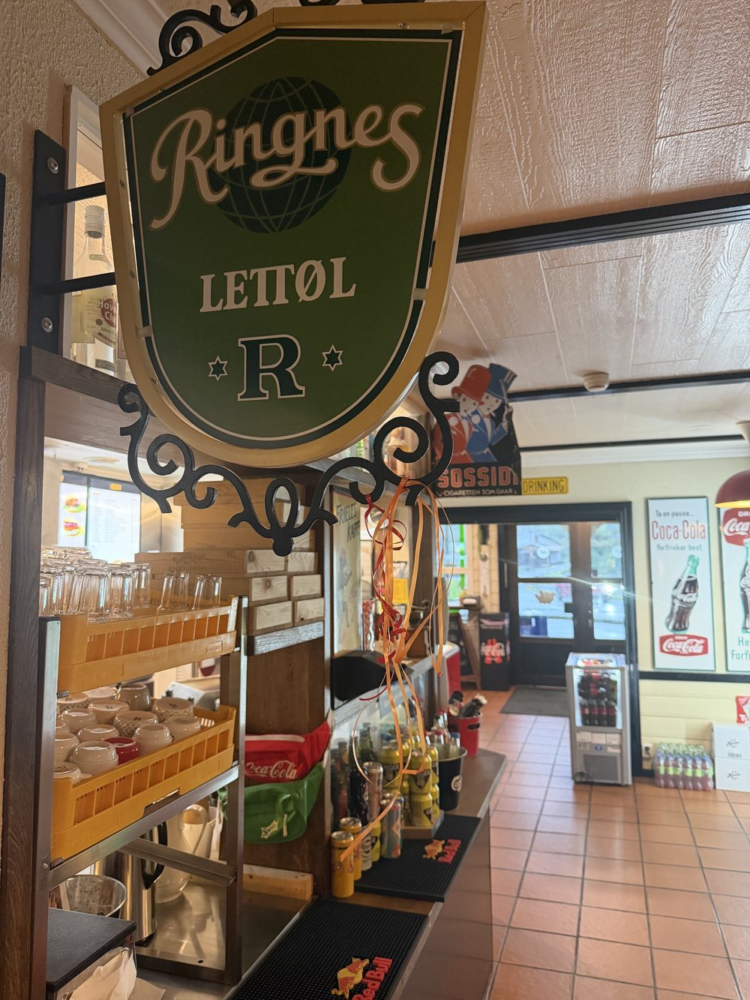
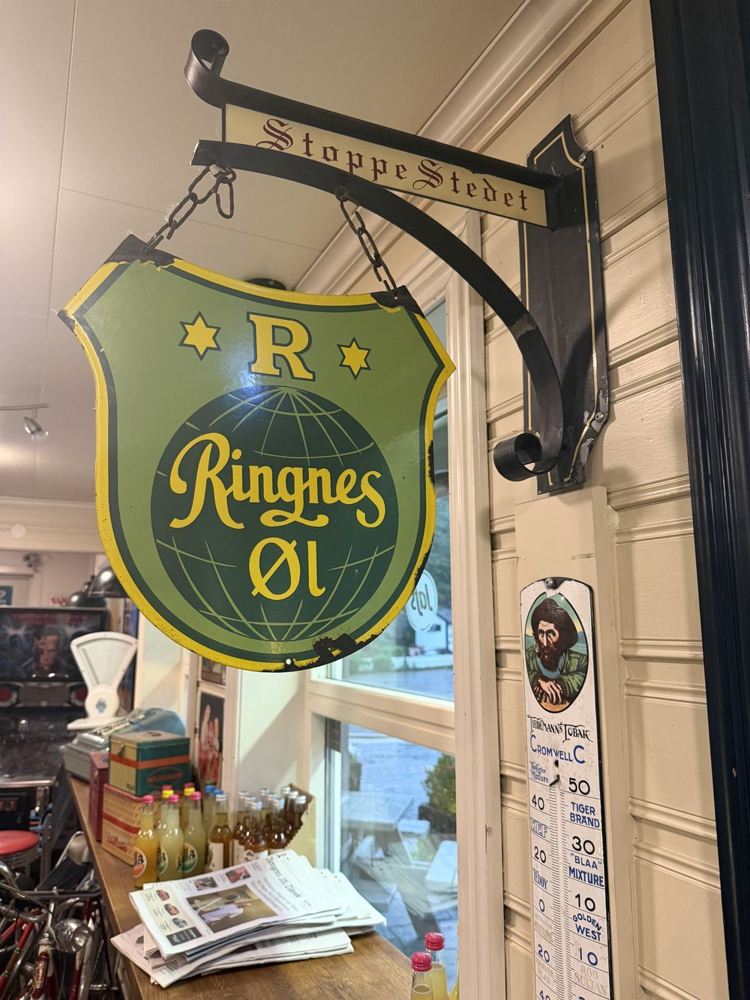
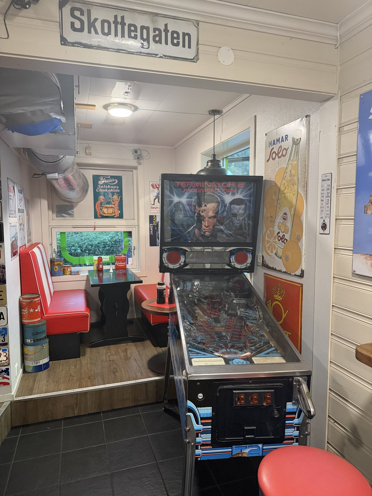
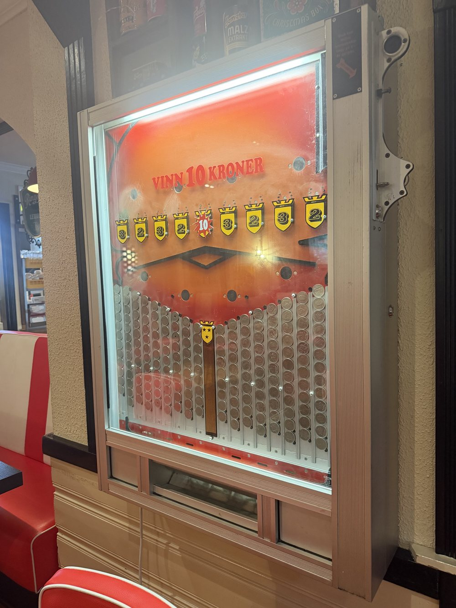
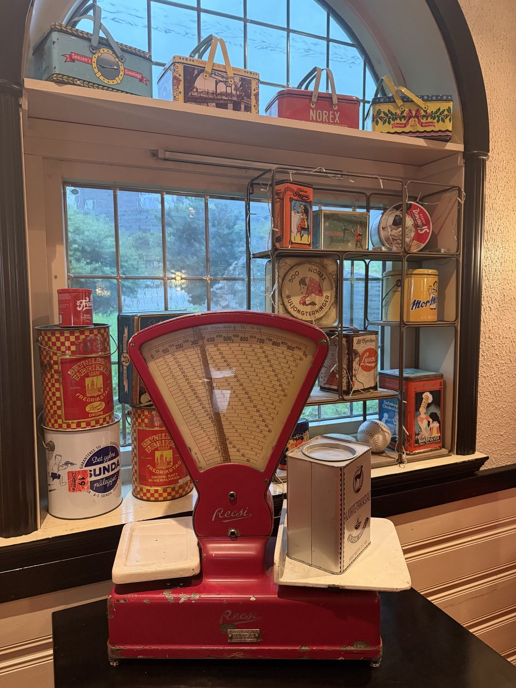
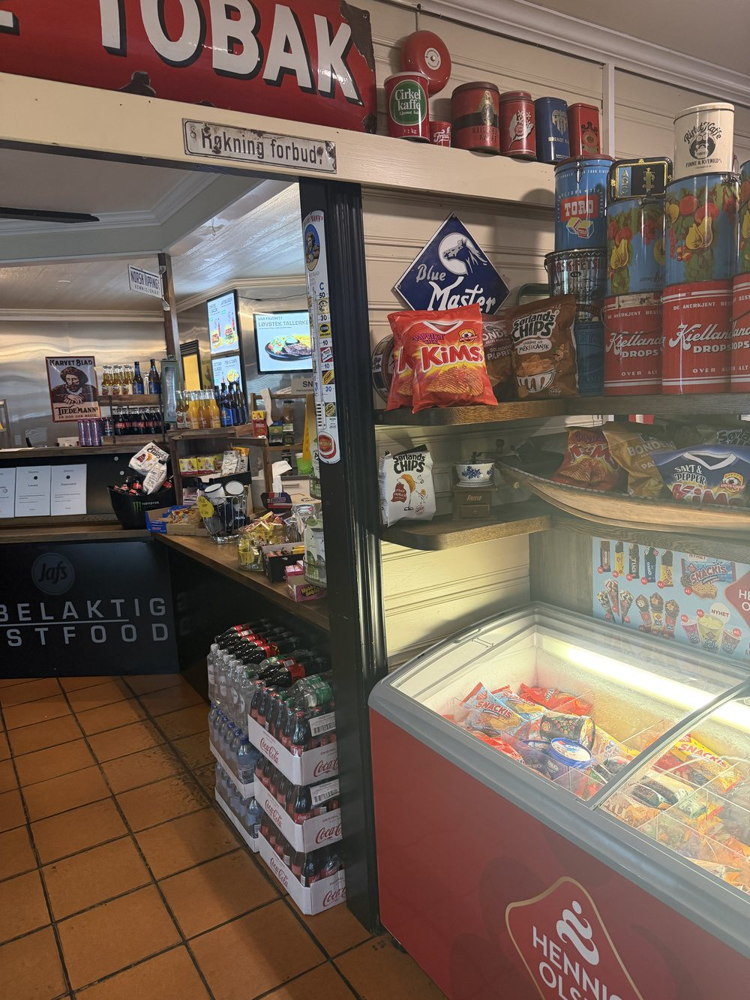

Der godtfolk treffest – sidan 1997.

Osterøykroa ligg i hjartet av Osterøy og har vore ein lokal møteplass sidan 1997. Me serverer kjøkken- og grillmat, tilbyr catering og inviterer til trivelege kveldar med livemusikk – og kanskje Vestlandets beste burger.
Me er mest kjende for burgermenyane våre, som kjem i fleire storleikar – frå ein god 100-grams til den solide 500-grams Jafs Burgeren. I tillegg serverer me nystekt pizza, snadder-tallerkenar, fish & chips og anna kjøkkenmat, med raspetallerken kvar torsdag.
Hos Osterøykroa er alle velkomne – anten du stikk innom for ein rask burger, tek med familien på snadder-tallerken, eller blir verande ein triveleg kveld med livemusikk. Me tilbyr også catering til fest og arrangement.

Gamle Ringnes-skilt, ei myntspelemaskin, ei vintagevekt og pinball i "Skottegaten" – det er mykje å oppdage hos oss.





